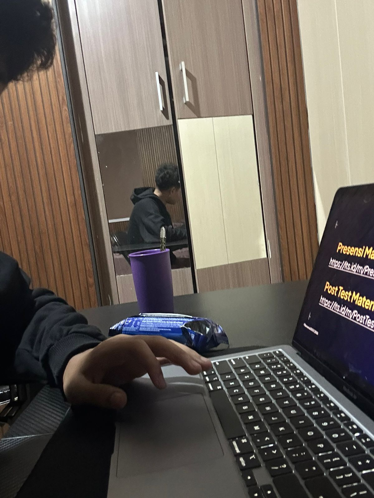

Muhammad Rayza Buftiem
Undergraduate Student • Department of Informatics, Institut Teknologi Sepuluh Nopember (ITS)
I am an energetic Informatics undergraduate at ITS Surabaya, passionate about modern web engineering, distributed systems, and human-centric software solutions. Born and raised in Jakarta, I actively balance rigorous academic computing with organizational leadership, event direction, and collaborative innovation.
Official Student Information
Core Identity
Academic Affiliation
Educational Journey
Formal academic pathway from primary school to tertiary studies at Indonesia's leading engineering institute.
Institut Teknologi Sepuluh Nopember (ITS)
Studying computational theory, object-oriented programming, data structures, web systems architecture, operating systems, and database engineering. Active in collaborative campus technical development.
SMA Insan Cendekia
Elected as Wakil Ketua OSIS (Vice President of Student Council). Coordinated schoolwide academic Olympiads, art and sports festivals, and represented the school in regional youth leadership forums.
Global Islamic School (GIS)
Served as Bendahara OSIS (Treasurer of Student Council). Managed student body funds, audited project budgets, and fostered financial transparency for student council initiatives.
Global Islamic School (GIS)
Built foundational academic excellence, moral integrity, and bilingual communication skills in Jakarta.
Technical Skillset
Core competencies spanning frontend web technologies, systems programming, and development tooling.